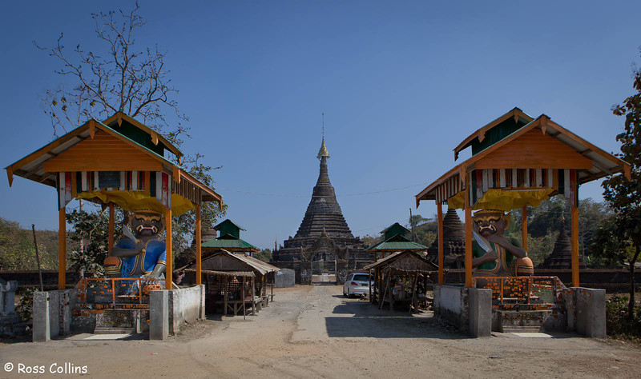
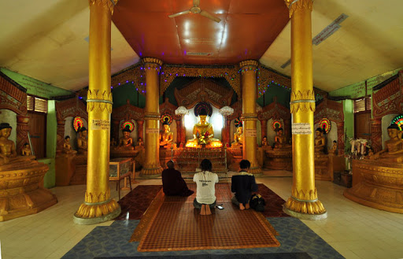
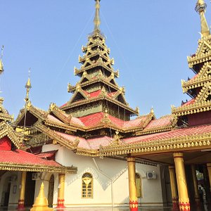

Sakya Man Aung Pagoda
Sakkyar Man Aung Pagoda is located on the east side of Mrauk U. This pagoda is known to be one of the five most
revered "Mann" paya of Mrauk U. King Sri Suddhamma Raja built the Sakkyar Man Aung Pagoda in A.D 1629. It is
located in the south of Yadanar Man Aung Pagoda.

This Pagoda is known to be one of the five most revered pagodas in Mrauk U. The five revered "Man" payas of
Mrauk U are Lawka Man Aung. Zeenat Man Aung. Sakkya Man Aung. Mingalar Man Aung and Yadanar Man Aung.
In Myanmar known as "Man Ngar Par". The pagoda was named after the Sakkyar dynasty. There are two statues of
Orges guarding the pagoda. The sculptural arts of these two images are of rare artists. Also there are two
statues of Nats. paying respect to Buddha.

The architecture of the pagoda is in the form of lotus flower. There are 12 small pagodas surrounding the main
Sakkyar Man Aung Pagoda. The dimension of the Pagoda is 240 feet and the height is about 114 feet.
The plan of the base of the pagoda is peculiar. The pagoda was built with stones instead of bricks. The base
consist of 8 braces joined to form an irregular octagon. From the first tier upward the structure is octagonal.
the sides over the four main braces form a straight line. and the intermediate braces are in the zigzag design
forms. The western gate of the pagoda is guarded by two large kneeling orgres.
